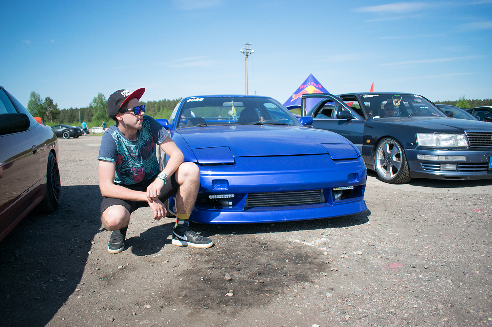
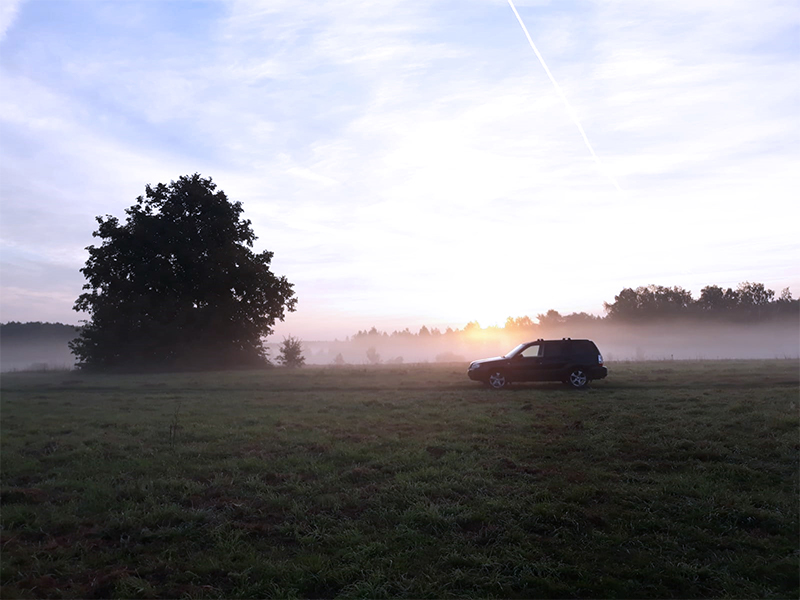
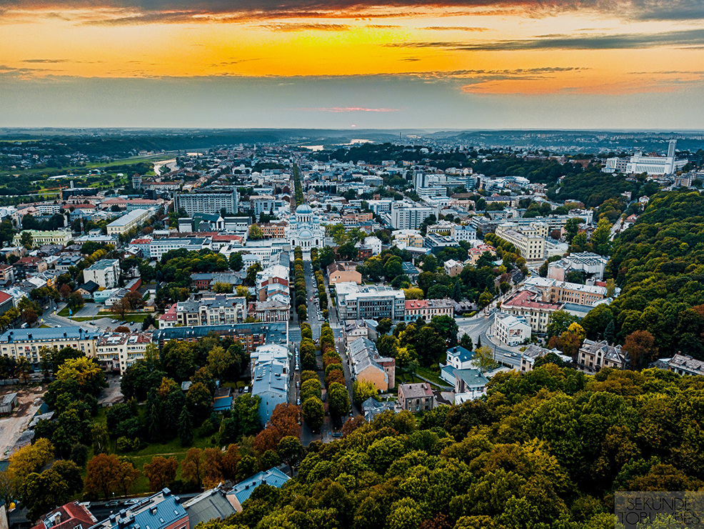

I am Dominykas Kutka
I am a 19 year old student from Lithuania. I am studying Multimedia Design and Communication at Kea (Copenhagen School of Design and Technology) in Copenhagen, Denmark. I really enjoy the way we toil in there, because it matches my habits and working style. Here I can express my feelings via media by turning knowledge into a product.
My Passions
Since the early years I have been interested in computers. I wanted to know how everything works, how it is done and how to do it myself. When I built my first computer, I started to learn how to use it, how to create beautiful things with it. Same thing happened when I got to fix my first car, so I could drive it. Now I am looking forward to combining all my passions into one big dream.
Home city
Kaunas is the second-largest city in Lithuania and the historical centre of Lithuanian economic, academic, and cultural life. I was born here in 1999 and I am proud that it is my home city.
